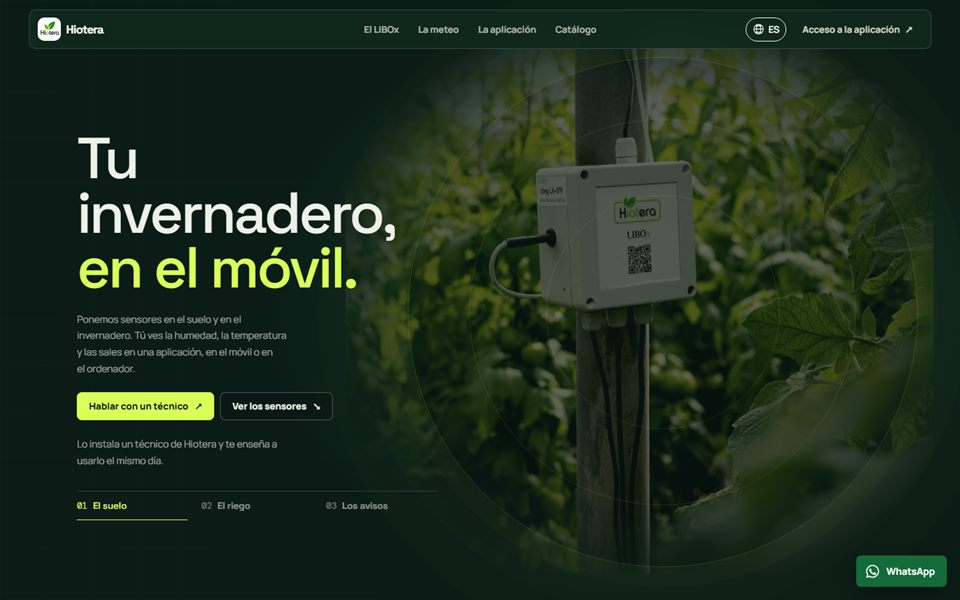
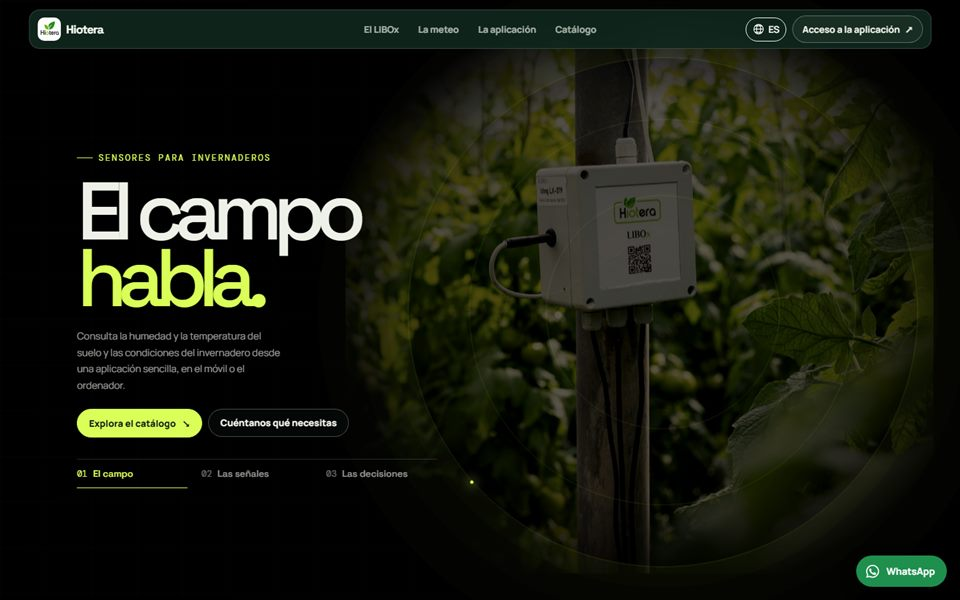
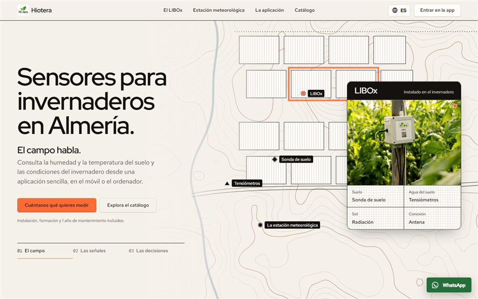
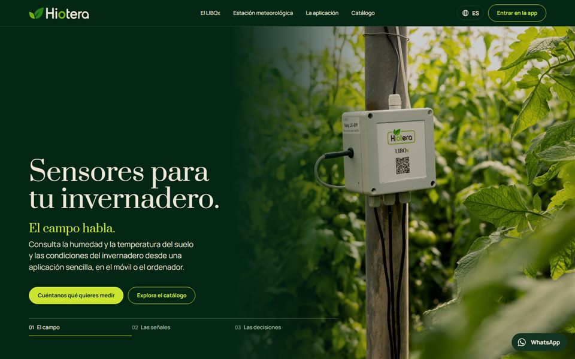

Versión actual (main)
La web publicada ahora mismo: portada oscura con la foto del LIBOx, «Tu invernadero, en el móvil».
Abrir este modelo
Cada tarjeta abre una versión completa de la web de Hiotera, compilada
tal como estaba en su rama o commit. Sirven para compararlas; la web
publicada sigue siendo la de la carpeta work.

La web publicada ahora mismo: portada oscura con la foto del LIBOx, «Tu invernadero, en el móvil».
Abrir este modelo
La web antes de los rediseños con Hallmark: fondo negro, acento verde ácido y «El campo habla».
Abrir este modelo
Papel manila, un plano topográfico de invernaderos con los sensores marcados y botones mandarina.
Abrir este modelo
Verde hoja con tinta crema, titulares en Prata, productos y servicios separados, y fotos reales de instalaciones.
Abrir este modelo